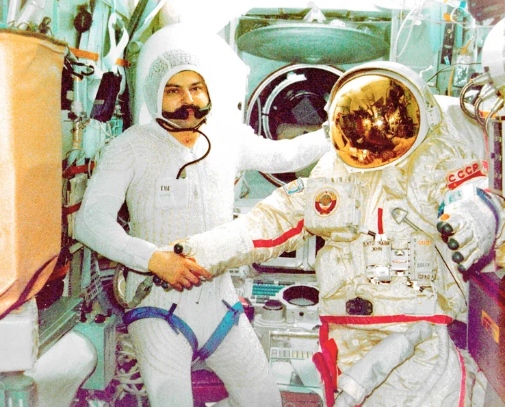
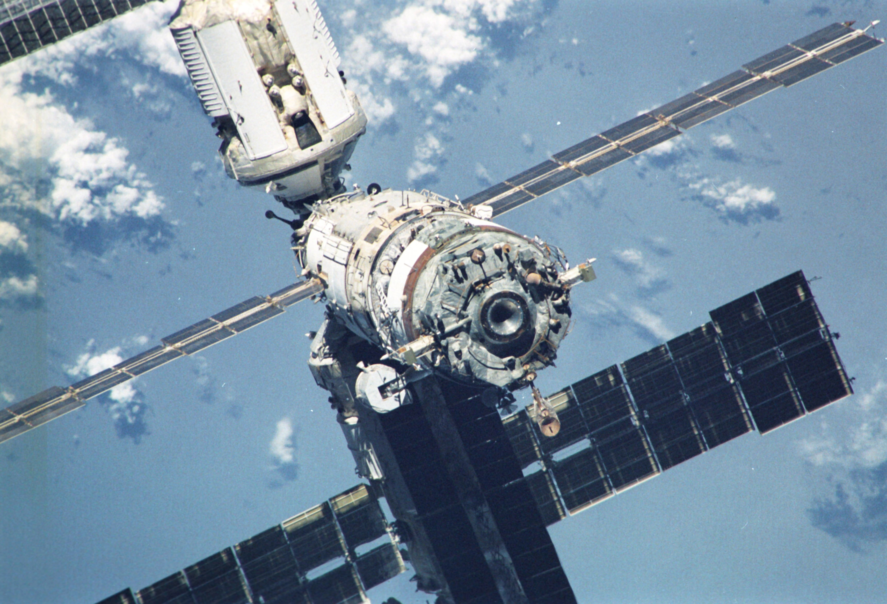
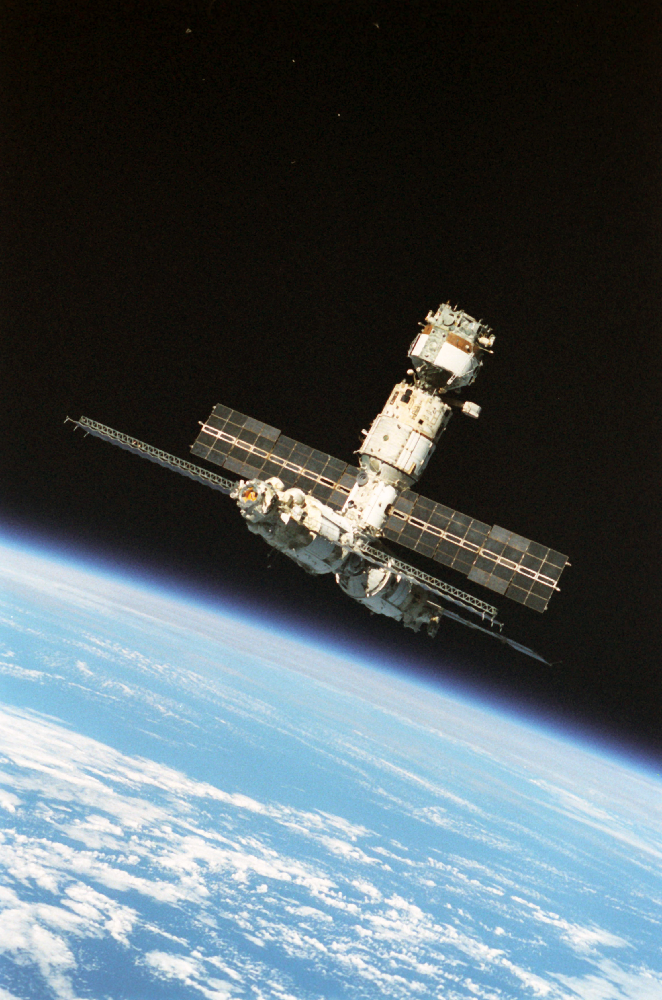
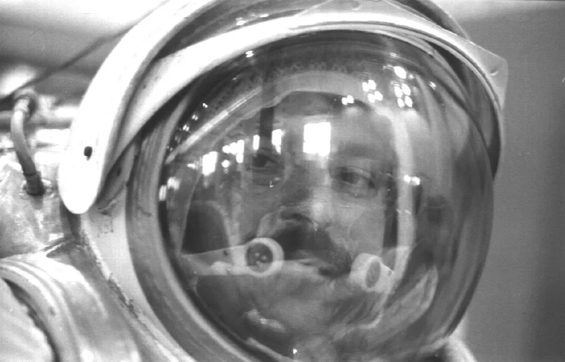
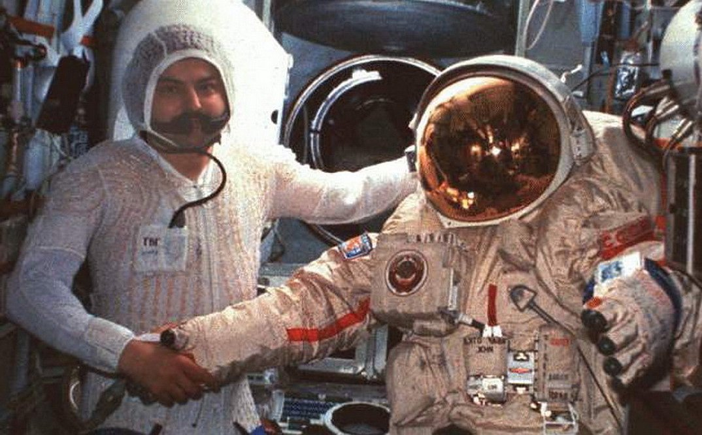

Выход в открытый
космос
Муса Манаров в открытом космосе.

Муса Манаров со скафандром.

Станция "Мир".

Станция "Мир".

Муса Манаров в скафандре.

Муса Хираманович и скафандр.
Как это происходит
История Мусы Манарова
Статистика и достижения